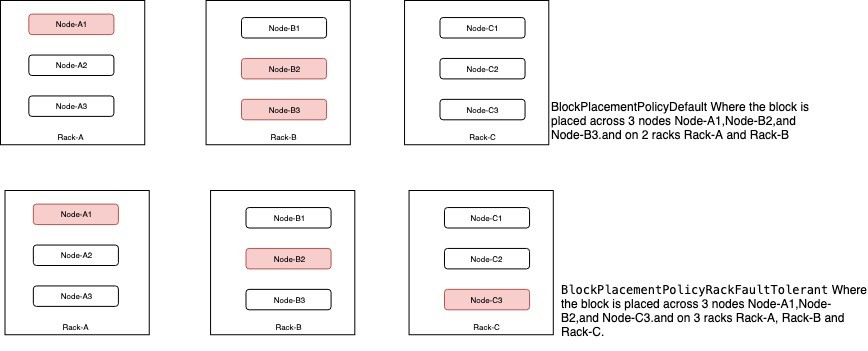

By default HDFS supports BlockPlacementPolicyDefault. Where one block on local and copy on 2 different nodes of same remote rack. Additional to this HDFS supports several different pluggable block placement policies. Users can choose the policy based on their infrastructure and use case. This document describes the detailed information about the type of policies with its use cases and configuration.
BlockPlacementPolicyRackFaultTolerant can be used to split the placement of blocks across multiple rack. By default, with replication of 3 BlockPlacementPolicyDefault will put one replica on the local machine if the writer is on a datanode, otherwise on a random datanode in the same rack as that of the writer, another replica on a node in a different (remote) rack, and the last on a different node in the same remote rack. So totally 2 racks will be used, in scenario like 2 racks going down at the same time will cause data unavailability where using BlockPlacementPolicyRackFaultTolerant will help in placing 3 blocks on 3 different racks.
For more details check HDFS-7891

Configurations :
<property> <name>dfs.block.replicator.classname</name> <value>org.apache.hadoop.hdfs.server.blockmanagement.BlockPlacementPolicyRackFaultTolerant</value> </property>
With new 3 layer hierarchical topology, a node group level got introduced, which maps well onto an infrastructure that is based on a virtualized environment. In Virtualized environment multiple vm’s will be hosted on same physical machine. Vm’s on the same physical host are affected by the same hardware failure. So mapping the physical host a node groups this block placement guarantees that it will never place more than one replica on the same node group (physical host), in case of node group failure, only one replica will be lost at the maximum.
Configurations :
<property> <name>net.topology.impl</name> <value>org.apache.hadoop.net.NetworkTopologyWithNodeGroup</value> </property> <property> <name>net.topology.nodegroup.aware</name> <value>true</value> </property>
<property>
<name>dfs.block.replicator.classname</name>
<value>
org.apache.hadoop.hdfs.server.blockmanagement.BlockPlacementPolicyWithNodeGroup
</value>
</property>
Topology script is the same as the examples above, the only difference is, instead of returning only /{rack}, the script should return /{rack}/{nodegroup}. Following is an example topology mapping table:
192.168.0.1 /rack1/nodegroup1 192.168.0.2 /rack1/nodegroup1 192.168.0.3 /rack1/nodegroup2 192.168.0.4 /rack1/nodegroup2 192.168.0.5 /rack2/nodegroup3 192.168.0.6 /rack2/nodegroup3
For more details check HDFS-8468
To address the limitation of block placement policy on rolling upgrade, the concept of upgrade domain has been added to HDFS via a new block placement policy. The idea is to group datanodes in a new dimension called upgrade domain, in addition to the existing rack-based grouping. For example, we can assign all datanodes in the first position of any rack to upgrade domain ud_01, nodes in the second position to upgrade domain ud_02 and so on. It will make sure replicas of any given block are distributed across machines from different upgrade domains. By default, 3 replicas of any given block are placed on 3 different upgrade domains. This means all datanodes belonging to a specific upgrade domain collectively won’t store more than one replica of any block.
For more details check HDFS-9006
Detailed info about configuration Upgrade Domain Policy
The AvailableSpaceBlockPlacementPolicy is a space balanced block placement policy. It is similar to BlockPlacementPolicyDefault but will choose low used percent datanodes for new blocks with a little high possibility.
Configurations :
<property>
<name>dfs.block.replicator.classname</name>
<value>org.apache.hadoop.hdfs.server.blockmanagement.AvailableSpaceBlockPlacementPolicy</value>
</property>
<property>
<name>dfs.namenode.available-space-block-placement-policy.balanced-space-preference-fraction</name>
<value>0.6</value>
<description>
Special value between 0 and 1, noninclusive. Increases chance of
placing blocks on Datanodes with less disk space used.
</description>
</property>
<property>
<name>dfs.namenode.available-space-block-placement-policy.balanced-space-tolerance</name>
<value>5</value>
<description>
Special value between 0 and 20, inclusive. if the value is set beyond the scope,
this value will be set as 5 by default, Increases tolerance of
placing blocks on Datanodes with similar disk space used.
</description>
</property>
<property>
<name>
dfs.namenode.available-space-block-placement-policy.balance-local-node
</name>
<value>false</value>
<description>
If true, balances the local node too.
</description>
</property>
For more details check HDFS-8131
The AvailableSpaceRackFaultTolerantBlockPlacementPolicy is a space balanced block placement policy similar to AvailableSpaceBlockPlacementPolicy. It extends BlockPlacementPolicyRackFaultTolerant and distributes the blocks amongst maximum number of racks possible and at the same time will try to choose datanodes with low used percent with high probability.
Configurations :
<property>
<name>dfs.block.replicator.classname</name>
<value>org.apache.hadoop.hdfs.server.blockmanagement.AvailableSpaceRackFaultTolerantBlockPlacementPolicy</value>
</property>
<property>
<name>dfs.namenode.available-space-rack-fault-tolerant-block-placement-policy.balanced-space-preference-fraction</name>
<value>0.6</value>
<description>
Only used when the dfs.block.replicator.classname is set to
org.apache.hadoop.hdfs.server.blockmanagement.AvailableSpaceRackFaultTolerantBlockPlacementPolicy.
Special value between 0 and 1, noninclusive. Increases chance of
placing blocks on Datanodes with less disk space used. More the value near 1
more are the chances of choosing the datanode with less percentage of data.
Similarly as the value moves near 0, the chances of choosing datanode with
high load increases as the value reaches near 0.
</description>
</property>
<property>
<name>dfs.namenode.available-space-rack-fault-tolerant-block-placement-policy.balanced-space-tolerance</name>
<value>5</value>
<description>
Only used when the dfs.block.replicator.classname is set to
org.apache.hadoop.hdfs.server.blockmanagement.AvailableSpaceRackFaultTolerantBlockPlacementPolicy.
Special value between 0 and 20, inclusive. if the value is set beyond the scope,
this value will be set as 5 by default, Increases tolerance of
placing blocks on Datanodes with similar disk space used.
</description>
</property>
For more details check HDFS-15288